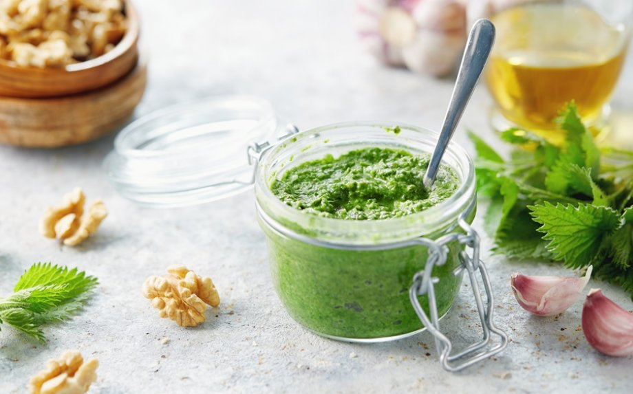
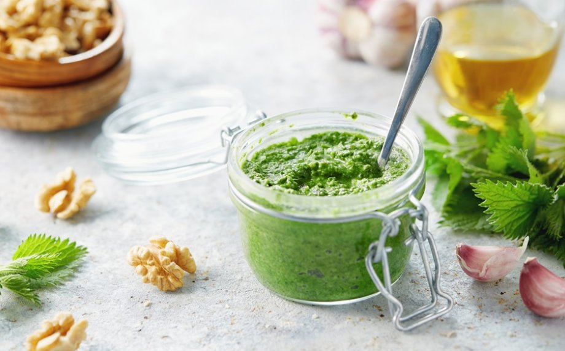

- 250 (kilo)gramų dilgėlių
- 250 gramų garšvos
- 100 (mili)litrų aliejaus
- pusė citrinos
- 2 saujos anakardžių riešutų
- 50 gramų kietojo sūrio
- 2 skiltelės česnako
- daug daug druskos/li>
- grūstų juodųjų pipirų (kuo daugiau - tuo geriau!)
|
-
Įjungti orkaitę kaisti iki 180C (kaitinimo režimas - viršus+apačia, be vėjelio).
Užvirinti vandenį ir palikti truputį atvėsti, kol ruošite tešlą.
-
Kiaušinius labai gerai išplakti su cukrumi, vaniliniu cukrumi ir žiupsneliu druskos.
Plakti iki masė pabals ir jos tūris padidės apie 3 kartus (apie 6-7 min).
Toliau plakant supilti aliejų.
-
Per kelis kartus sudėti miltus, sumaišytus su kepimo milteliais, ir kavavą, kaskart išmaišant, kad neliktų sausų miltų.
-
Toliau maišant pamažu supilti karštą vandenį. Masė bus gana skysta, taip ir turėtų būti.
-
Į keksiukų formelę įdėti popierinius keksiukų "sijonėlius". Į juos pilti tešlą užpildant ne daugiau kaip tris ketvirtadalius.
-
Kepti iki 180 C laipsnių įkaitintos orkaitės viduryje apie 20 - 25 minutes.
-
Iškepusiems leiskite truputį atvėsti, o tada skanaukite!
|
 
